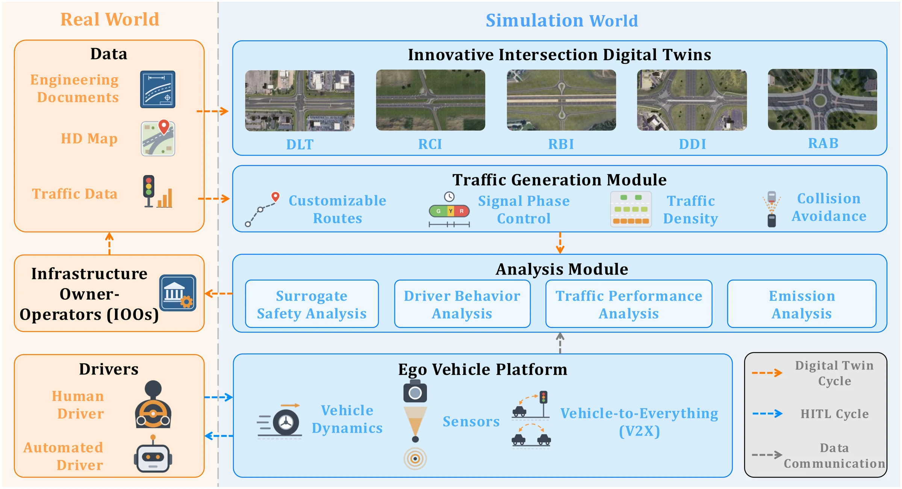
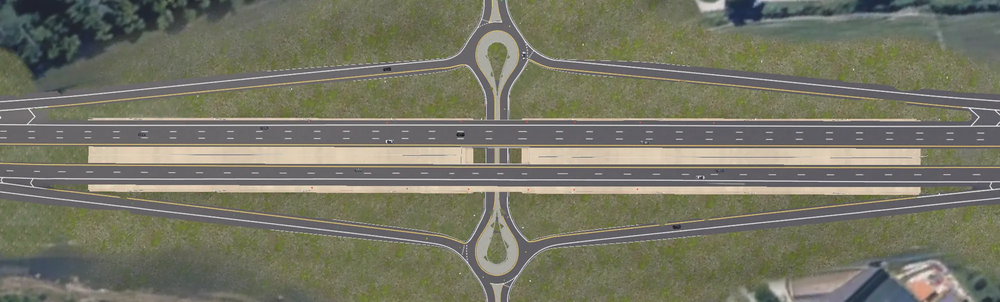
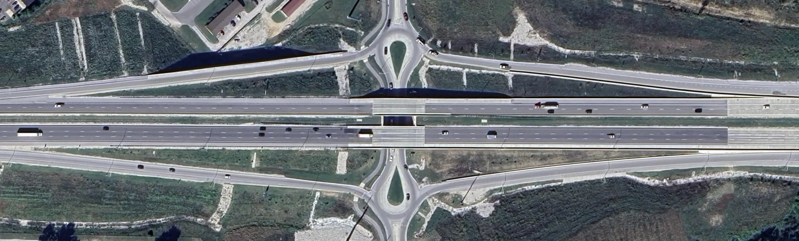
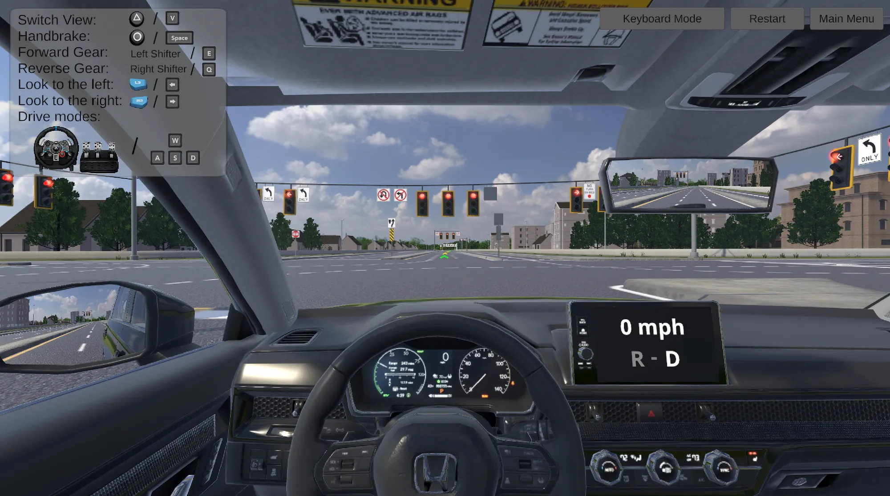

The design
1College of Engineering, Purdue University 2College of Engineering, University of Central Florida ✉Corresponding author: ziran@ieee.org
Innovative intersection designs can improve roadway safety and operational efficiency, but their uncommon geometries may create challenges for driver comprehension during early deployment. Evaluating these designs through full-scale field implementation can also be costly. This paper presents InterSim, a Unity game engine-based human-in-the-loop (HITL) driving simulator that constructs digital twins of site-specific innovative intersections in a virtual environment. InterSim links the real world and the simulation world through two closed cycles: a digital twin cycle that builds each intersection twin from agency design and traffic data and returns evidence from simulation to the agency, and an HITL cycle in which human drivers or automated driving algorithms operate the ego vehicle under identical scenario conditions. The research capabilities of InterSim are demonstrated through two case studies: a surrogate safety study compares post-encroachment time distributions between a Reduced Conflict Intersection and a conventional intersection under different traffic volumes; an eco-driving study compares human drivers with a rule-based agent using vehicle-to-infrastructure information and reveals differences in emission and driving behavior. These studies demonstrate that InterSim provides a reusable digital twin platform for investigating innovative intersection designs from diverse perspectives.
The design
The cost
The gap
InterSim couples the real world, where agencies hold the design data and drivers operate vehicles, with a simulation world that keeps a digital twin of each intersection. Two closed cycles connect them.

Each twin is modeled from agency road-plan documents and aerial imagery. It keeps the real site's road geometry, pavement markings, traffic signs, and signals, so a driver sees the same visual guidance and maneuvers as at the real intersection. InterSim currently includes five innovative intersection twins.
DLT
Left-turning traffic crosses the opposing lanes upstream of the main intersection, so left turns can run at the same time as opposing through traffic.
Drag the handle to compare the aerial image of the real site with the digital twin.



Ego-vehicle physics expose engine characteristics, gear ratios, suspension, and tire friction, so they can be tuned to match a production vehicle. InterSim currently includes four types of vehicles.
@misc{jiang2026intersim,
title = {InterSim: Innovative Intersection Digital Twins for
Human-in-the-Loop Driving Simulation},
author = {Jiang, Luyang and Wei, Chuheng and Li, Yaguang and
Wang, Shaoqi and Zhou, Yupeng and Yun, Hyunsoo and
Liao, Xishun and Pitts, Brandon and Wang, Ziran},
year = {2026}
}This work was supported by the Indiana Department of Transportation (INDOT) Joint Transportation Research Program (JTRP) under Grant JTRP-4932.